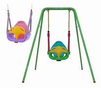
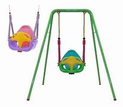
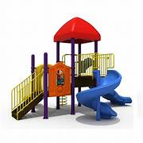
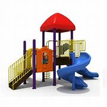

tipos de juegos
hamacas
 

Un clásico infaltable de la niñez. Ideal para que el niño por sus medios o con asistente acceda y tenga la facilidad necesaria para balancearse en el columpio.
sube y baja


Un balancín, subibaja o >sube y baja es un entretenimiento infantil que consiste en una barra larga de
tobogan
 

Los toboganes son construcciones de carácter recreativo, que consiste en una rampa inclinada como especie de trineo deslizante bajo formado. Armadura de acero montada sobre dos patines largos cubierta por una tabla o plancha acolchada. elevada en su parte posterior por una escalera que permite el ascenso a la parte superior para proceder al descenso